ASLZAR 💎 — Referal dasturi va bonus kartasi qo‘llanmasi
Referal dasturi qanday ishlaydi, limitlar admin panelda qanday boshqariladi, bonus 1C da qanday
ishlatiladi va mijoz bonus QR kartasini do‘konda qanday ko‘rsatadi.
Platforma versiyasi 2.12.0 · Hujjat sanasi: 08.08.2026
Referal dasturi — ASLZAR mijozlariga o‘z tanishlarini platformaga taklif qilish va ular xarid qilganda
mukofot olish imkonini beruvchi tizim.
Dastur uch qismdan iborat:
Telegram bot — taklif havolasini qabul qiladi, ikkala tomonni tekshiradi va referalni biriktiradi.
Mini ilova (Mini App) — foydalanuvchi o‘z havolasini, QR kodini va taklif qilganlar ro‘yxatini ko‘radi.
1C tizimi — xaridni kuzatadi, mukofotni hisoblaydi va muddati o‘tgan referallarni o‘chiradi.
Bundan tashqari admin panel orqali referal limitlari — ya’ni bitta foydalanuvchi nechta odam
taklif qila olishi — to‘liq boshqariladi. Bu qo‘llanmaning asosiy yangiligi shu.
Muhim: ilgari amal qilgan 10 000 so‘mlik bonus bekor qilingan — u hech kimga berilmaydi.
Endi mukofot faqat haqiqiy xariddan foiz ko‘rinishida beriladi va uni 1C hisoblaydi.
2. Kimlar ishtirok eta oladi
Rol
Shart
Izoh
Taklif qiluvchi (misolda — Aziz)
ASLZAR mijozi bo‘lishi shart — kamida bitta xarid qilgan bo‘lishi kerak.
Xarid qilmagan foydalanuvchi uchun referal bo‘limi yopiq bo‘ladi.
Taklif qilinuvchi (misolda — Bobur)
ASLZAR mijozi bo‘lmasligi kerak — yangi odam bo‘lishi shart.
Allaqachon mijoz bo‘lgan odam referal sifatida hisobga olinmaydi.
Xarid qilmagan foydalanuvchi nimani ko‘radi
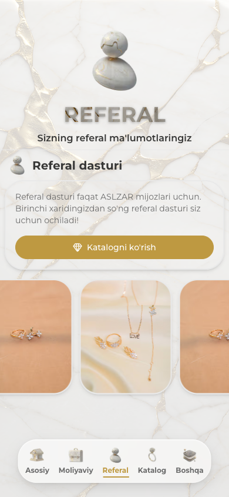
Hali xarid qilmagan foydalanuvchi uchun referal sahifasi: havola ham, QR kod ham ko‘rsatilmaydi.
Uning o‘rniga tushuntirish matni va katalogga o‘tish tugmasi chiqadi.
3. Asosiy oqim — Aziz va Bobur misolida
Aziz — ASLZAR mijozi, ilgari xarid qilgan. Bobur — uning tanishi, hali ASLZAR bilan
ishlamagan. Quyida to‘liq jarayon ko‘rsatilgan.
3.1. Birinchi bosqich — Aziz havolani ulashadi
flowchart TD
START(["Aziz mini ilovada Referal bo'limini ochadi"]) --> ELIG{"Aziz ASLZAR mijozimi?"}
ELIG -->|"Yo'q — xarid qilmagan"| BLOCK(["Referal bo'limi yopiq — tushuntirish matni ko'rsatiladi"])
ELIG -->|"Ha"| LIM{"Aziz referal limitiga yetganmi?"}
LIM -->|"Ha — limit to'lgan"| HIDE(["Havola va QR kod berilmaydi — 'Referal dasturi' xabari"])
LIM -->|"Yo'q — joy bor"| SHARE(["Aziz havola yoki QR kodni ulashadi"])
3.2. Ikkinchi bosqich — Bobur havolani bosadi
flowchart TD
JOIN(["Bobur havolani bosadi va botga qo'shiladi"]) --> PHONE{"Telefon raqamini yubordimi?"}
PHONE -->|"Yo'q"| WAIT(["Referal biriktirilmaydi — raqam kutiladi"])
PHONE -->|"Ha"| CHK{"Bobur ASLZAR mijozi EMASmi?"}
CHK -->|"Yo'q — allaqachon mijoz"| STOP(["Referal qo'shilmaydi"])
CHK -->|"Ha — u yangi"| LIVE{"Azizning limiti 1C dan jonli tekshiriladi"}
LIVE -->|"Limit to'lgan"| NOTIFY(["Referal qo'shilmaydi — Azizga xabar yuboriladi"])
LIVE -->|"Joy bor"| ADD(["Referal biriktiriladi: Aziz → Bobur"])
Aziz mini ilovadagi Referal bo‘limini ochadi va o‘z havolasini (yoki QR kodini) oladi.
U havolani Boburga yuboradi.
Bobur havolani bosadi — Telegram botni ochadi va “Start” bosadi.
Bot Boburdan telefon raqamini so‘raydi. Raqam yuborilmaguncha referal biriktirilmaydi —
havolani bosishning o‘zi yetarli emas.
Raqam kelgach bot tekshiradi: Bobur haqiqatan ham yangi odammi va Azizda bo‘sh joy bormi.
Hammasi joyida bo‘lsa — referal biriktiriladi va Azizga xabar keladi.
Shundan so‘ng 1C tomonida 10 kunlik oyna boshlanadi.
Diqqat: referal darhol emas, balki Bobur telefon raqamini yuborgandan keyin biriktiriladi.
Shuning uchun havola bosilgani bilan referallar soni bir zumda oshmasligi mumkin.
4. Mukofot va 10 kunlik oyna
Referal biriktirilgach, Bobur uchun 10 kunlik muddat boshlanadi.
Bobur shu 10 kun ichida xarid qilsa — u ASLZAR mijoziga aylanadi va
xarid summasidan foiz taklif qilgan Azizga beriladi.
Agar 10 kun ichida xarid bo‘lmasa — 1C referalni avtomatik o‘chiradi.
Aziz hech narsa yo‘qotmaydi, shunchaki bu taklif hisobga olinmaydi.
Foizni hisoblash ham, referalni o‘chirish ham to‘liq 1C tomonida bajariladi.
Bot bunga aralashmaydi.
Aynan shu avtomatik o‘chirish sababli admin paneldagi “Jami referallar” ko‘rsatkichi kichik
bo‘lishi mumkin: xarid bilan yakunlanmagan takliflar u yerda saqlanib qolmaydi.
5. Referal limiti (yangi imkoniyat)
Referal limiti — bitta foydalanuvchi jami nechta odamni referal sifatida qo‘sha olishini belgilaydigan chegara.
Asosiy qoidalar
Har bir foydalanuvchi uchun standart limit — 5 ta referal.
Standart limitni admin panelning Referal sahifasida istalgan vaqtda o‘zgartirish mumkin.
U shaxsiy limiti belgilanmagan barcha foydalanuvchilarga qo‘llaniladi.
Alohida foydalanuvchi uchun shaxsiy limit belgilash mumkin. Shaxsiy limit
har doim ustuvor — standart limit unga ta’sir qilmaydi.
Limit ASLZAR tomonida boshqariladi. 1C dagi referalLimit maydoni ishlatilmaydi.
Referallar soni esa 1C dan olinadi va referal biriktirilayotgan paytda
jonli tekshiriladi — eskirgan ma’lumot ishlatilmaydi.
Limit to‘lganda nima bo‘ladi
Kimga
Nima bo‘ladi
Taklif qiluvchiga
Mini ilovada havola, QR kod, Nusxa olish va Ulashish tugmalari
ko‘rsatilmaydi. Ularning o‘rniga tushuntirish kartasi chiqadi. Yangi referal biriktirilsa,
botdan sababini tushuntiruvchi xabar keladi.
Taklif qilinganga
Hech narsa o‘zgarmaydi. U odatdagidek ro‘yxatdan o‘tadi va ilovadan to‘liq foydalanadi —
faqat referal biriktirilmaydi. Unga hech qanday ogohlantirish yuborilmaydi.
Limitdan oshib ketgan foydalanuvchilar. Agar kimdadir limitdan ko‘p referal bo‘lsa
(masalan, limit 5 ta, referallari 8 ta), mavjud referallar saqlanib qoladi va mukofotlar
o‘z kuchida qoladi. Faqat yangi referal qo‘shish to‘xtatiladi.
6. Foydalanuvchi ilovada nimani ko‘radi
Oddiy holat — limitda joy bor
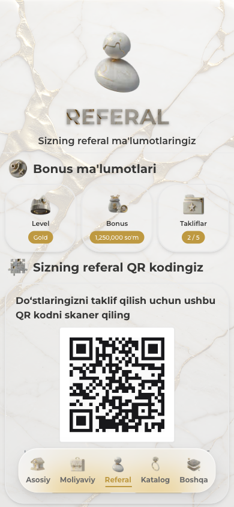
Referal sahifasining umumiy ko‘rinishi.
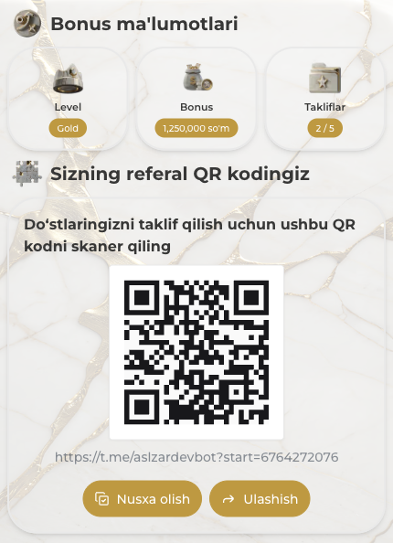
Yuqorida uchta karta: Level, Bonus va yangi Takliflar kartasi —
u ishlatilgan / limit ko‘rinishida (misolda 2 / 5) foydalanuvchida yana
qancha joy borligini ko‘rsatadi. Pastda QR kod, Nusxa olish va Ulashish tugmalari.
Limit to‘lgan holat
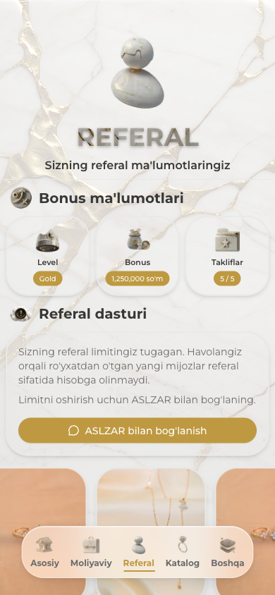
Limit to‘lganda sahifaning umumiy ko‘rinishi.
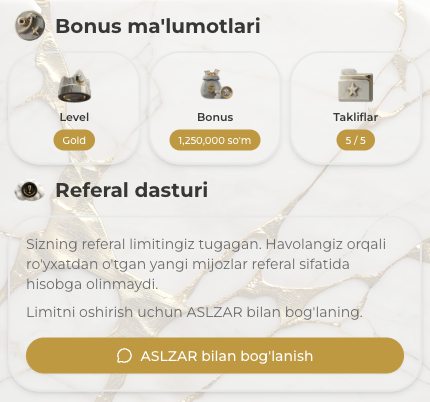
Takliflar kartasi 5 / 5 ni ko‘rsatadi. QR kod va ulashish tugmalari o‘rniga
“Referal dasturi” kartasi chiqadi va “ASLZAR bilan bog‘lanish” tugmasi
foydalanuvchini to‘g‘ridan-to‘g‘ri ASLZAR admin akkauntiga olib o‘tadi.
Ulashish imkoniyati faqat ekranda yashirilmaydi — server ham bu holatda ulashish uchun xabar
tayyorlashdan bosh tortadi. Ya’ni chekni chetlab o‘tish mumkin emas.
Taklif qilinganlar ro‘yxati
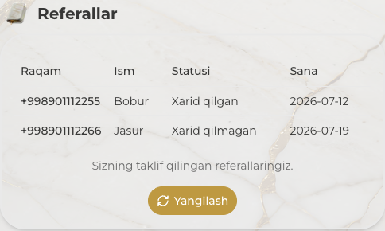
Foydalanuvchi o‘zi taklif qilgan odamlarni, ularning xarid holatini va sanasini ko‘rib turadi.
Ro‘yxat 1C dan olinadi va limit to‘lganda ham ko‘rinib turaveradi.
7. Bot qanday xabar yuboradi
Bot ikki holatda faqat taklif qiluvchiga xabar yuboradi. Taklif qilingan odam bu xabarlarni ko‘rmaydi.
1-holat — referal qo‘shildi
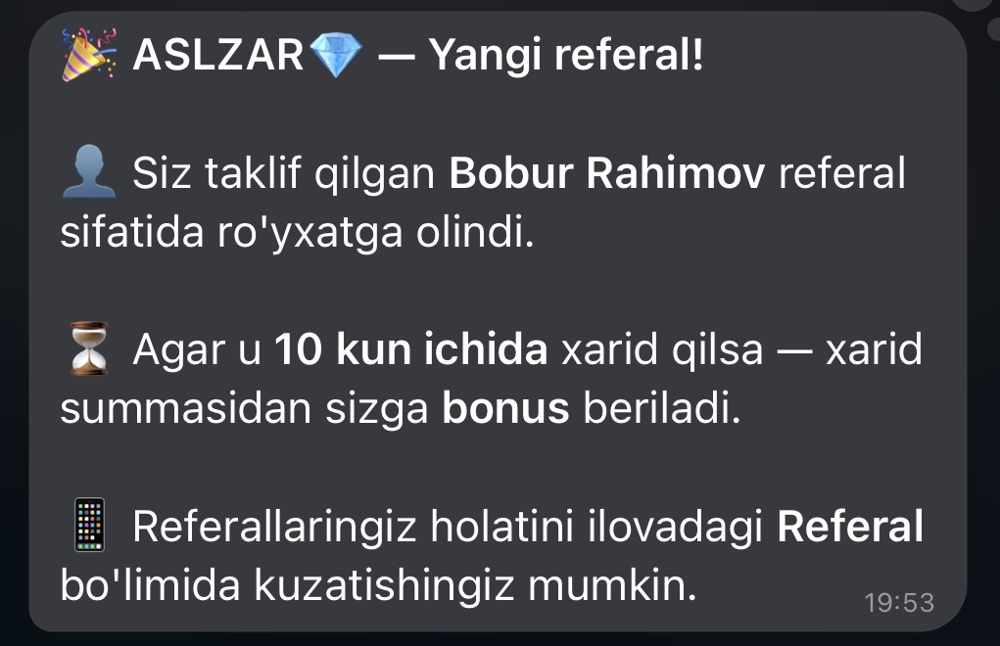
Taklif muvaffaqiyatli biriktirilganda taklif qiluvchiga keladigan xabar: kim qo‘shilgani,
10 kunlik shart va referallarni ilovadan kuzatish mumkinligi eslatiladi.
2-holat — limit to‘lgan, referal qo‘shilmadi
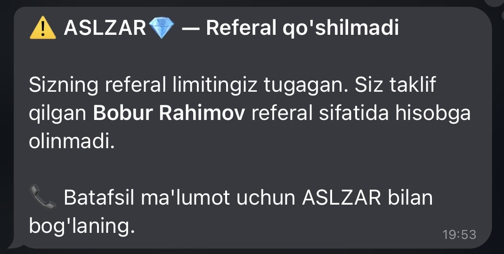
Limit to‘lganda keladigan xabar: kim hisobga olinmagani aytiladi va batafsil ma’lumot uchun
ASLZAR bilan bog‘lanish taklif qilinadi.
Ikkinchi xabarda raqamlar ataylab ko‘rsatilmaydi — foydalanuvchiga limitning aniq qiymati
aytilmaydi, chunki u har bir foydalanuvchi uchun har xil bo‘lishi mumkin.
8. Bonusni ishlatish tartibi
Mijozning to‘plangan bonuslarini ishlatish uchun xodim 1C da QR tugmasini bosadi va mijozning
telefonidagi bonus kartasini skaner qiladi. Tartib savdo turiga qarab ikki xil bo‘ladi.
Skaner qilinadigan QR kod — bu mijozning mini ilovasidagi ASLZAR bonus kartasi
(11-bo‘lim). Kod 5 daqiqa amal qiladi, shuning uchun skaner qilish paytida mijoz
ilovani ochib turgan bo‘lishi kerak.
Mijozning telefonida ochilgan QR kodni skaner qiling.
Kod muvaffaqiyatli o‘qilgach, bonusdan foydalanish imkoniyati ochiladi.
Yechib olinishi lozim bo‘lgan bonus summasini kiriting.
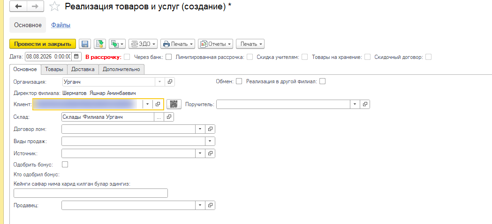
«Реализация товаров и услуг» hujjatining «Основное» bo‘limi. QR tugmasi
«Клиент» maydonining yonida joylashgan.
Bonusni yechish uchun amaldagi QR kod talab qilinadi. Mijoz ID raqamini qo‘lda kiritish
yoki eski skrinshotni skaner qilish orqali bonus yechib bo‘lmaydi — buning sababi
11-bo‘limda tushuntirilgan.
9. Admin panelda boshqarish
9.1. Barcha foydalanuvchilar uchun standart limit
Admin panelning chap menyusidagi Referal bo‘limini oching. Bu sahifada dastur sozlamalari va
umumiy statistika joylashgan.
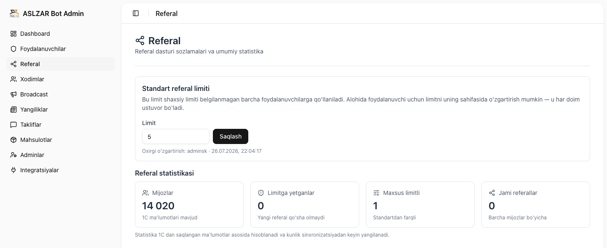
Admin panel → Referal sahifasi.
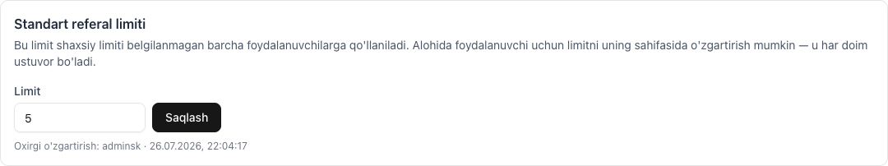
Standart referal limiti. Yangi qiymatni kiriting va Saqlash tugmasini bosing.
Pastda oxirgi o‘zgartirishni kim va qachon qilgani ko‘rsatiladi.
Standart limitni faqat superadmin o‘zgartira oladi. Boshqa adminlar sahifani ko‘ra oladi,
lekin forma ular uchun faol bo‘lmaydi.
9.2. Statistika nimani anglatadi
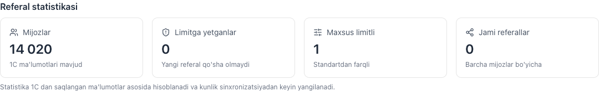
Referal statistikasi.
Ko‘rsatkich
Ma’nosi
Mijozlar
1C ma’lumotlari mavjud bo‘lgan foydalanuvchilar soni.
Limitga yetganlar
Referallar soni o‘z limitiga yetgan va endi yangi referal qo‘sha olmaydigan foydalanuvchilar.
Maxsus limitli
Standartdan farqli, shaxsiy limit belgilangan foydalanuvchilar soni.
Jami referallar
Barcha mijozlar bo‘yicha 1C da qayd etilgan referallar yig‘indisi.
9.3. Foydalanuvchilar ro‘yxatidagi limit ustuni
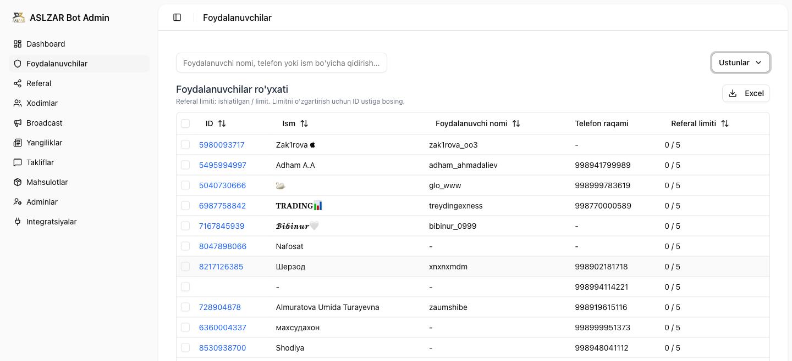
Foydalanuvchilar sahifasidagi Referal limiti ustuni har bir foydalanuvchi uchun
ishlatilgan / limit ko‘rinishida chiqadi. Limitga yetgan qatorlar qizil rangda
ajratiladi. Ustunni bosib saralash mumkin — kimda kam joy qolgani birinchi bo‘lib chiqadi.
Ma’lumotni Excelga ham yuklab olish mumkin.
Kerakli ustunlarni yuqori o‘ngdagi Ustunlar tugmasi orqali yashirish yoki ko‘rsatish mumkin —
yuqoridagi rasmda aynan shu qilingan.
9.4. Bitta foydalanuvchi uchun shaxsiy limit
Foydalanuvchi sahifasini ochish uchun ro‘yxatdagi ID raqamini bosing.
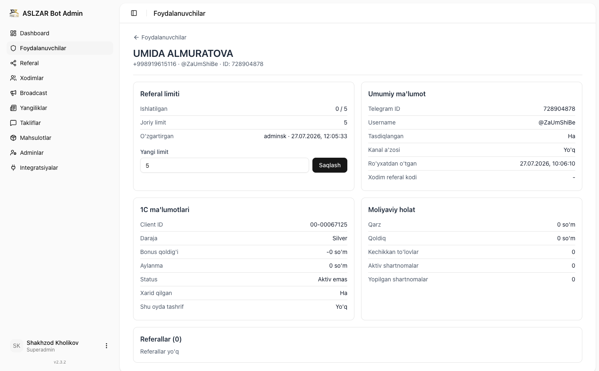
Foydalanuvchi sahifasi: referal limiti, umumiy ma’lumot, 1C ma’lumotlari, moliyaviy holat va
u taklif qilgan odamlar ro‘yxati bir joyda.
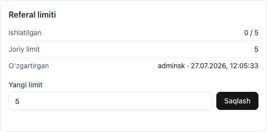
Referal limiti kartasi.
Shaxsiy limitni o‘zgartirish tartibi:
Foydalanuvchilar sahifasida kerakli odamni toping (ism, familiya yoki telefon bo‘yicha qidiruv ishlaydi).
Uning ID raqamini bosing.
Referal limiti kartasidagi Yangi limit maydoniga son kiriting.
Saqlash tugmasini bosing — o‘zgarish darhol kuchga kiradi.
Kartadagi Ishlatilgan qatori hozirgi holatni, Joriy limit amaldagi chegarani,
O‘zgartirgan esa oxirgi o‘zgartirishni kim va qachon qilganini ko‘rsatadi.
Maydonni bo‘sh qoldirib saqlansa, foydalanuvchi shaxsiy limitdan voz kechadi va yana
standart limitga qaytadi.
10. Kim nima qiladi
Amal
Bot
1C
Admin panel
Taklif qiluvchi va taklif qilinuvchini tekshirish
✅
—
—
Referal limitini tekshirish
✅
—
—
Referalni biriktirish
✅ avtomatik
—
—
Taklif qiluvchiga xabar yuborish
✅
—
—
10 kunlik oyna va xaridni kuzatish
—
✅
—
Xariddan foiz hisoblash
—
✅
—
Muddati o‘tgan referalni o‘chirish
—
✅
—
Standart limitni belgilash
—
—
✅ superadmin
Shaxsiy limitni belgilash
—
—
✅
Statistikani ko‘rish
—
—
✅
11. Bonus QR kartasi
Har bir ASLZAR mijozining 1C tizimida o‘z Mijoz ID raqami bor. Ilgari bu raqamni do‘konda
og‘zaki aytib berish kerak edi. Endi mini ilovada ASLZAR bonus kartasi paydo bo‘ldi — xodim
QR kodni skaner qiladi va mijozni bir zumda topadi.
QR kod ichida endi himoyalangan, muddatli kod saqlanadi: u 5 daqiqa amal qiladi va
ilova uni o‘zi yangilab turadi. Nima uchun bunday qilingani quyida —
“QR kod o‘zi yangilanib turadi” bo‘limida tushuntirilgan.
Karta nima uchun kerak
Mijozni 1C da tez topish — raqamni qo‘lda kiritish shart emas.
Bonuslarni ishlatishda navbatni tezlashtirish.
Xato kamayadi — raqam noto‘g‘ri eshitilishi yoki noto‘g‘ri yozilishi ehtimoli yo‘qoladi.
Kartani kim ko‘radi
Karta referal dasturi bilan bir xil shartga bo‘ysunadi: uni faqat ASLZAR mijozlari,
ya’ni kamida bitta xarid qilgan foydalanuvchilar ko‘radi. Bu 1C dagi contractFirst
belgisi bilan aniqlanadi — u xarid qilingandan keyin true bo‘ladi.
Foydalanuvchi holati
Bonus kartasi
Referal bo‘limi
Ro‘yxatdan o‘tgan va xarid qilgan (ASLZAR mijozi)
✅ ko‘rinadi
✅ ochiq
Ro‘yxatdan o‘tgan, lekin hali xarid qilmagan
— ko‘rinmaydi
— yopiq
Umuman ro‘yxatdan o‘tmagan
— ko‘rinmaydi
— yopiq
Xarid qilmagan foydalanuvchi uchun karta shunchaki ko‘rsatilmaydi — hech qanday xato yoki
ogohlantirish chiqmaydi. Birinchi xariddan so‘ng karta o‘zi paydo bo‘ladi, alohida sozlash talab
qilinmaydi.
Karta qanday ko‘rinadi
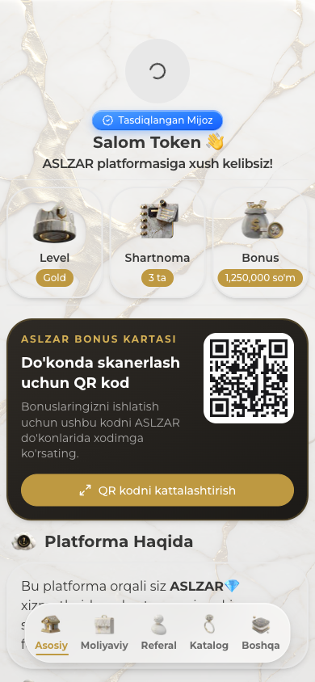
Karta bosh sahifada, “Platforma Haqida” bo‘limidan yuqorida joylashadi.
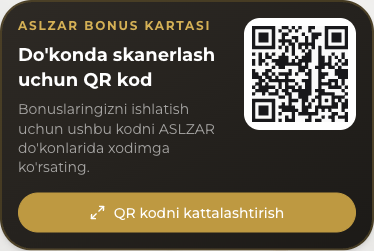
Kartada QR kod va “QR kodni kattalashtirish” tugmasi bor. Mijoz ID raqami
endi QR ostida yozilmaydi — sababi quyida.
Karta yana qayerda bor
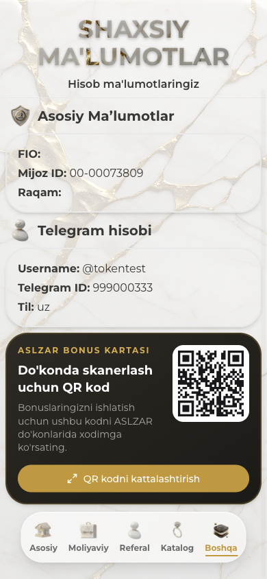
Xuddi shu karta “Shaxsiy ma’lumotlar” sahifasining eng pastida ham turadi. Bu sahifa
Telegramdagi sozlamalar tugmasi (⚙) orqali ochiladi.
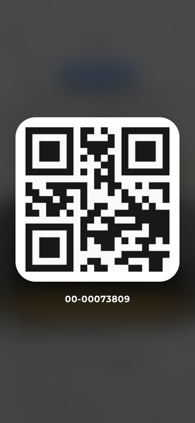
“QR kodni kattalashtirish” tugmasi bosilganda QR kod butun ekranni egallaydi —
skaner qilish osonlashadi. Yopish uchun ekranning istalgan joyiga bosish kifoya.
QR kod o‘zi yangilanib turadi
Ilgari QR kodda mijozning Mijoz ID raqami turardi. Bu raqam hech qachon o‘zgarmaydi —
demak kartaning bir marta olingan skrinshoti abadiy ishlar edi. Shu sababli ba’zi
xodimlar mijozlarning kartalarini bir-biriga yuborib, begona bonuslarni yechib olgan
holatlar aniqlandi.
Endi QR kodda o‘zgaruvchan, himoyalangan kod saqlanadi:
Kod 5 daqiqa amal qiladi.
Karta ekranda ochiq turganda ilova kodni o‘zi yangilaydi — mijoz hech narsa qilmaydi.
Ilova qayta ochilganda ham yangi kod beriladi.
Kodning haqiqiyligini va muddatini 1C tekshiradi — soxta yoki eskirgan kod qabul qilinmaydi.
Skrinshot endi ishlamaydi. Bir necha daqiqadan so‘ng u eskiradi va kassada rad etiladi.
Begona kartadan foydalanib bonus yechish imkoni yo‘q.
Mijoz uchun hech narsa o‘zgarmaydi. U xuddi avvalgidek kartani ochadi va ko‘rsatadi.
Yangilanish fonda, ko‘rinmasdan sodir bo‘ladi — ekranda hech qanday taymer yoki ogohlantirish
chiqmaydi.
Internet bo‘lmasa
Yangi kodni olish uchun telefonda internet kerak bo‘ladi. Aloqa yo‘qolsa, karta QR kod o‘rniga
“Kod yangilanmadi. Internetga ulaning va qaytadan urinib ko‘ring” degan yozuvni ko‘rsatadi.
Aloqa tiklangach karta o‘zi qayta ishlay boshlaydi — ilovani qayta ochish shart emas.
Bu ataylab shunday qilingan: kassada o‘qilmaydigan kodni ko‘rsatgandan ko‘ra, sababini darhol
aytib qo‘ygan yaxshiroq. Aks holda xodim kodni bir necha marta skaner qilib, aybni kartadan
qidirgan bo‘lardi.
Do‘konda qanday ishlatiladi
Mijoz mini ilovani ochadi (bosh sahifa yoki “Shaxsiy ma’lumotlar”).
“QR kodni kattalashtirish” tugmasini bosadi.
Telefon ekranini kassadagi xodimga ko‘rsatadi.
Xodim QR kodni skaner qiladi va 1C da mijozni topadi.
Kod qabul qilinmasa — mijozdan ilovani yopib, qaytadan ochishni so‘rang. Yangi kod chiqadi.
Mijoz ID raqamini qo‘lda kiritish endi ishlamaydi. Bonus yechish uchun mijozning
telefonidagi amaldagi QR kod kerak. Bu ataylab shunday: raqamning o‘zini bilish yetarli
bo‘lganda, uni bilgan har kim begona bonusni yechib olishi mumkin edi.
QR kodda telefon raqami, passport, bonus miqdori yoki boshqa shaxsiy ma’lumot yo‘q —
faqat Mijoz ID, kodning amal qilish muddati va imzo. Shuning uchun kodni ko‘rsatish xavfsiz.
Skaner qilish qiyin bo‘lsa, telefon ekranining yorqinligini oshirish tavsiya etiladi —
ilova yorqinlikni o‘zi boshqara olmaydi.
12. Savol-javob
Havola ilgari ulashilgan bo‘lsa, limit to‘lgandan keyin u ishlaydimi?
Havolaning o‘zi ochiladi — odam botga qo‘shiladi va ro‘yxatdan o‘tadi. Lekin limit
har bir referal biriktirilishida qaytadan tekshiriladi, shuning uchun referal hisobga olinmaydi.
Eski havolalar orqali chetlab o‘tish mumkin emas.
Limitdan oshib ketgan foydalanuvchilarning referallari o‘chib ketadimi?
Yo‘q. Mavjud referallar ham, ular bo‘yicha mukofotlar ham saqlanib qoladi. Faqat yangi qo‘shish to‘xtaydi.
Limitni o‘zgartirsam, qachon kuchga kiradi?
Bot uchun — darhol: har bir referalda joriy qiymat qayta o‘qiladi.
Mini ilova va admin panelda — bir daqiqa ichida.
Standart limitni o‘zgartirsam, shaxsiy limitlarga ta’sir qiladimi?
Yo‘q. Shaxsiy limit har doim ustuvor. Standart limit faqat shaxsiy limiti yo‘qlarga qo‘llaniladi.
Taklif qilingan odam limit haqida biror narsa biladimi?
Yo‘q. U hech qanday xabar olmaydi va odatdagidek ro‘yxatdan o‘tadi.
Nima uchun “Jami referallar” ko‘rsatkichi kichik?
Chunki 1C xarid bilan yakunlanmagan referallarni 10 kundan keyin o‘chiradi. Statistikada faqat
hozirda 1C da qayd etilgan referallar ko‘rinadi.
Xodimlar referal kodlari (emp1, emp2 ...) ham shu limitga bo‘ysunadimi?
Yo‘q. Xodim referali — alohida mexanizm, u foydalanuvchi qaysi xodim orqali kelganini qayd etadi.
Referal limiti unga taalluqli emas.
Limit o‘rniga bo‘sh qiymat saqlansa nima bo‘ladi?
Foydalanuvchi standart limitga qaytadi — ya’ni admin panelda belgilangan umumiy qiymatga.
Bonus kartasi ko‘rinmayapti — nima uchun?
Karta faqat ASLZAR mijozlariga, ya’ni kamida bitta xarid qilganlarga ko‘rsatiladi.
Ro‘yxatdan o‘tgan, lekin hali xarid qilmagan foydalanuvchida karta chiqmaydi. Birinchi xariddan
keyin u avtomatik paydo bo‘ladi.
QR kod skaner qilinmasa nima qilish kerak?
Avval mijozdan telefon ekranining yorqinligini oshirishni va
“QR kodni kattalashtirish” tugmasini bosishni so‘rang. Shundan keyin ham o‘qilmasa —
ilovani yopib, qaytadan ochish kerak: yangi kod chiqadi.
Mijoz ID raqamini qo‘lda kiritish endi ishlamaydi — bonus yechish uchun amaldagi QR kod
talab qilinadi.
Kassada “kod eskirgan” degan javob chiqdi. Nima bo‘ldi?
Kod 5 daqiqa amal qiladi. Agar mijoz kartani ancha oldin ochib qo‘ygan bo‘lsa yoki
skrinshot ko‘rsatayotgan bo‘lsa, kod eskirgan bo‘ladi. Yechim oddiy: mijoz ilovani qayta ochadi
va yangi kod ko‘rsatadi.
Bu nosozlik emas — himoya shunday ishlashi kerak. Karta buzilmagan.
Mijoz kartani ochib qo‘yib, navbatda uzoq turdi. Kod eskiradimi?
Yo‘q. Karta ekranda ochiq turganda ilova kodni o‘zi yangilab turadi. Mijoz navbatda
qancha turgani muhim emas — kassaga yetganda ekranda amaldagi kod bo‘ladi.
Do‘konda internet yoki aloqa yomon bo‘lsa-chi?
Yangi kod olish uchun mijozning telefonida internet bo‘lishi kerak. Aloqa bo‘lmasa karta
QR o‘rniga “Kod yangilanmadi. Internetga ulaning...” degan yozuvni ko‘rsatadi. Mijoz Wi-Fi ga
ulansa yoki aloqa tiklansa, karta o‘zi qayta ishlaydi.
Mijoz kartasini boshqa odamga yuborsa nima bo‘ladi?
Yuborilgan skrinshot bir necha daqiqadan keyin ishlamay qoladi. Boshqa odam u bilan bonus
yecha olmaydi. Aynan shu muammoni hal qilish uchun kodga muddat qo‘yilgan.